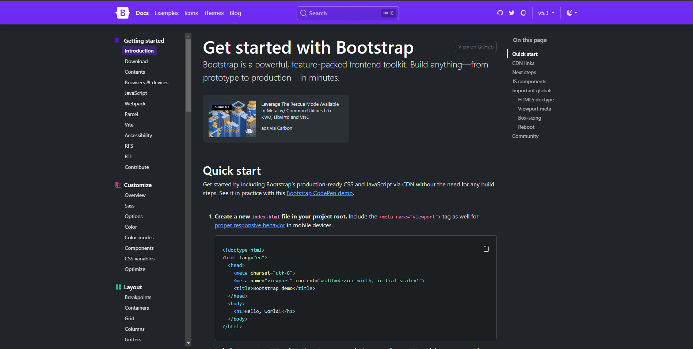
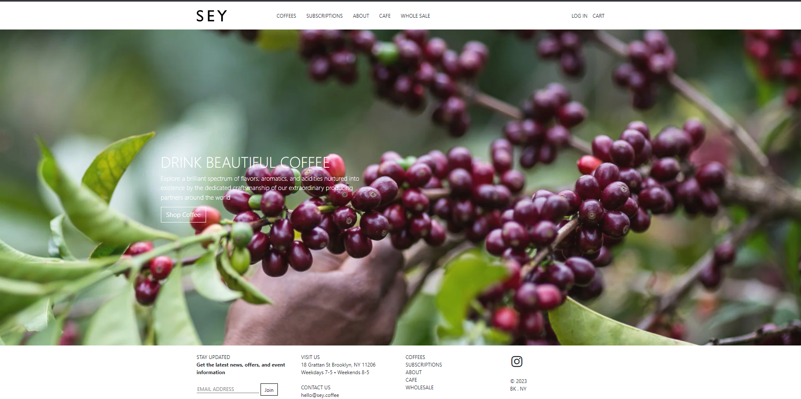

UI Framework
07 Oct 2023What are UIFrameworks?
A UI framework is a software framework that allows developers to create, manage, and optimize user interfaces in a structured manner. They are used to create visually appealing user interfaces for websites, applications and digital products. One popular UI Framework that I have been introduced to is Bootstrap. Bootstrap has become a tool for an effective and efficient UI framework.
Simplicity and Practicality
What caught my eye, and perhaps many beginners, towards Bootstrap, is its simplicity. Its layout is straightforward, making it an easier learning curve for newcomers to front-end development. The comprehensive documentation provides various examples and detailed explanations for each component, which is a blessing for anyone trying to grasp the understanding of web development. Pre-built components like navigation bars, buttons, and forms not only speed up the development process but also provide a consistent and aesthetically pleasing user interface. Thus, for anyone attempting to create simple and clean website layouts, Bootstrap lays down a phenomenal foundation, making it a valuable resource for those who are at the beginner stage of learning CSS.

Customization and Uniformity
While Bootstrap stands out for its many benefits, it’s also crucial to acknowledge its limitations, especially in terms of customization. I like to think of bootstrap like a tool for a tool box. It has its simplistic and efficient design for customizing a website which can be good but also bad because you might want some more customization. This is where most of the web can tend to have a similar look and feel due to the default styles and components.
The customization aspect of Bootstrap, while somewhat limited compared to writing CSS from scratch, still offers a good balance between ease-of-use and flexibility. For developers looking to push beyond the default styles, Bootstrap’s Sass variables and mixins provide a way for deeper customization. This allows for the tweaking of Bootstrap’s core components to fit the unique branding and design requirements of a project that you can be doing.
Learning Curve
When it comes to the learning curve, Bootstrap 5 I found it very useful to look through a YouTube tutorial first then reading the documentation. There are an abundance of classes that correspond to specific styles. Learning this was probably the hardest part of bootstrap. However, other than that mostly everything was easy to understand from the documentation. The documentation is user-friendly and extensive which helped me grasp the fundamental concepts.
As with any tool, mastering Bootstrap requires time and practice. While the initial learning curve is gentle, especially with the help of video tutorials and a rich online community, going into more advanced features of the framework can be challenging. This is particularly true when trying to override or extend the default Bootstrap behavior to achieve more custom and complex designs. The key is to start with small, manageable projects and gradually build up to more complex applications.
My Projects With BootStrap
In my experience with bootstrap, I found it very enticing to see a visually appealing website be designed with very few amounts of work effort needed in the stylesheet. The following are examples of my bootstrap projects that I have worked with so far.



Working with Bootstrap on various projects has been a journey. Each project presented its own set of challenges and learning opportunities, from adapting the framework to fit specific design needs to optimize the performance for better user experience. For instance, in the Seycoffee project, the focus was on creating a visually appealing and intuitive online storefront, leveraging Bootstrap’s grid system and components for a clean and user-friendly layout. In contrast, the Murphey project required a more customized approach, tweaking Bootstrap’s default styles to align with the unique branding and aesthetic vision of the project. These experiences highlight the versatility of Bootstrap, demonstrating its capability to cater to a wide range of design requirements while maintaining ease of use and efficiency in development.